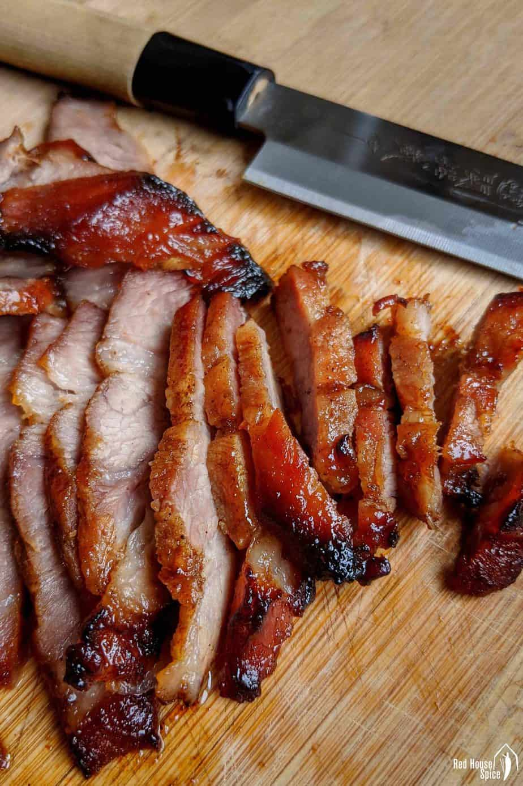

Char Siu

What is Char Siu
Char Siu (叉烧), also knows as Chinese BBQ pork, is a type of roasted pork originating from Cantonese cuisine. Traditionally, the marinated pork is skewered with long forks and roasted in an oven or over an open fire. That’s where its Chinese name Char/叉 (fork) Siu/烧 (roast) comes from
Having an aromatic, sweet, savoury and smoky flavour, Char Siu can be enjoyed on its own, as the centrepiece of a multi-course meal, or with some staple food forming an all-in-one dish, such as Char Siu Rice (叉烧饭), Char Siu Noodles (叉烧面) and Char Siu Bao (叉烧包).
What you need
- Char Siu Sauce
- Oyster sauce
- Light soy Sauce
- Chinese Five Spice Powder
- Garlic and Ginger
- Chilli powder
Instructions
Make the meat red
You might have noticed that my Char Siu doesn’t have the reddish colour that you usually see on shop/restaurant bought one. If you are after that particular look, please feel free to add a little colouring agent to the marinade. You may use either red yeast powder/红曲粉 or regular red food colouring.
Let the flavour penetrate
To achieve the best taste, you need to make sure that the flavour of the sauce penetrates into the meat as much as possible. Here are two tips:
- Use a resealable plastic bag. Put the meat inside. Add all the ingredients for the marinade. Squeeze out the air and seal the bag. Rub the bag with your fingers to make sure every part of the meat is in touch with the sauce. Keep in the fridge.
- Leave marinate overnight. I usually prepare the marinade in the evening, then roast the meat the next day for dinner. Alternatively, you may start marinating in the morning and cook in the evening.
How to roast in the oven
Use a wire rack
Marinated pork needs to be roasted on a wire rack so that it can be cooked evenly. Also, the excess sauce/juice can drip off freely during roasting. It’s important to have some water underneath to collect the drippings thus prevent smoking/burning. Here are two options:
- Use a baking tray with a wire rack placed inside. Fill the tray with hot water (lower than the rack) then put the pork on the rack
- Alternatively, place a tray filled with hot water at the bottom of the oven. Then place the meat on the middle rack of the oven.
Temperature and Timing
Now it’s time to roast the meat in the oven. It takes me a little over 30 mins from start to finish. Let’s break down the entire process into four stages:
- The first 15 mins. Roast at 425°F/220°C/Fan 200°C. I highly recommend you use the fan-assisted function if available. It’s more efficient and cooks more evenly.
- A future 10 mins. Take the meat out and flip it over. Brush some marinade then put back to the oven. Remain the same temperature.
- 5 mins at a higher temperature. Turn the oven up to 460°F/240°C/Fan 220°C. Take the meat out and brush with the honey and marinade mixture. Put back to the oven.
- The final 3 mins. Brush the honey mixture on the other side of the meat. Roast for 3 mins at high temperature.